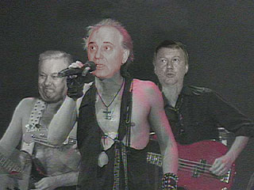

“Великое рок-н-ролльное надувательство-2. Часть первая (АПН)

В свое время крестный отец панка Малькольм Макларен снял фильм о том, как он удачно продал уличный бунт британских недорослей испуганной буржуазии, окончательно потерявшей веру в будущее после бурного финала революционных 60-ых, нефтяного кризиса 73-го и дебюта палестинского террора на Мюнхенской олимпиаде.
– No future, будущего нет! — орал Джонни Роттен, и испуганные хозяева мира вторили полушепотом: — Yes, yes, no future…
На этом совпадении спроса и предложения веснушчатый шотландец и заработал свои миллионы. А потом слил секрет своего успеха в циничной ленте Great Rock’n’Roll Swindle (Великое рок-н-ролльное надувательство).
Печальная история русского рока так пока, к счастью или к несчастью, не обрела своего Макларена, который снял бы сиквел под названием «Великое рок-н-ролльное надувательство-2» Ибо, как и в той британской истории, мы имеем дело со старинным филистерским трюком: конвертацией гнева поэтов в политический капитал власть имущих с последующей сдачей на расправу обманутой толпе сделавших свое дело мавров.
В чем обычно обвиняют русский рок его критики, выползшие внезапно, словно черви после дождя, на могиле покойного, о котором, казалось бы, успели позабыть даже ближайшие родственники?
Они обвиняют его в том, что он послужил одним из инструментов разрушения Советской империи. И они отчасти правы. Но самозваные судьи в своем надрывном пафосе (каковой обычно выдает пристрастность суда) забывают об одном немаловажном для юриспруденции понятии — понятии умысла — и забывают неспроста.
«I was framed! Меня подставили!» — восклицают в критический момент герои типичного американского криминального боевика. Вместе с ними мое поколение — поколение тех, кто делал русский рок — может с полным основанием воскликнуть: «We were framed! Нас подставили!»
Вернемся на двадцать пять лет назад.
Мы не знали советской власти такой, какой ее замышлял Сталин, не говоря уже о призрачных на тот момент тенях Ленина и Троцкого. Мы выросли и возмужали при Брежневе. С его птенцами нам и приходилось иметь дело. Именно о них были наши ранние песни — о комсомольских цыплятах с оловянными глазками, веривших только в джинсы и загранкомандировки. О бездуховности и смерти веры. О войне против будущего во имя животных радостей настоящего — потных лобков млеющих комсомольских подруг в обкомовской бане. (Мне не хочется сыпать цитатами: пусть тяжесть доказательства противного лежит на обвинителях. Пусть они найдут хоть одну антисоветскую строку в доперестроечном русском роке — и я возьму свои слова обратно.)
Реакция на развертывающийся у нас на глазах процесс обуржуазивания была спонтанной и синхронной — это была стихийная реакция юных идеалистов на наличную фальшь социума. Типичный, как сказали бы сейчас, сетевой процесс. Узлы возникали, не подозревая о существовании друг друга, и только потом устанавливали между собой горизонтальные связи — на уровне двора, города, страны. Устанавливали медленно: так о существовании питерского андерграунда мы узнали в 1983-ем, когда у нас у самих за плечами было уже по несколько созданных групп и записанных альбомов.
В силу сетевой природы процесса каждый центр кристаллизации того, что позже получило название «русского рока», имел свою, отчетливо выраженную специфику: Питер наиболее был связан с западными веяниями, Москва никогда не могла до конца изжить свое родство с кухонными бардами предыдущего поколения, мы же (и сибиряки) были дики и безродны как Гог и Магог. Запад мы, конечно, уважали, но примерно как древние греки своих богов — без пиетета. Барды были нам точно не родня — Высоцкого (и Северного) сдержанно уважали, за упоминание же об Окуджаве или Галиче можно было конкретно получить в хлебало. Антисоветчина — что сам-, что тамиздатовская — вызывала однозначную враждебность.
Помню типичную сцену из поздних 70-ых: баня на задворках дачного участка, бутылка «Эрети», приемник «Спидола», напряженное вслушивание в лирический оргазм Роберта, скажем, Планта, пробивающийся через рев глушилок. И вдруг — Whole Lotta Love заканчивается, сразу же унимаются глушилки (да, да — их врубали в основном на музыке — за работу, господа конспирологи!) — и в эфире возникает квакающий эмигрантский голос, докладающий, говоря стихами Емелина:
«Про поэтов на нарах,
Про убийство царя
И о крымских татарах,
Что страдают зазря…»
И тут же чей-нибудь ленивый вопль: «Дюха, выруби этого козла, поищи еще музон!» Так что маленькая хитрость мистера Бжезинского не срабатывала: караси, обглодав мякиш, выплевывали крючок. (Или именно так и было задумано? Это нам объяснят конспирологи, которые, как известно, всегда правы.)
Когда мы перестали слушать чужой музон и начали делать свой, мы понесли его на показ советской власти — во-первых, потому, что нужно было получить литовку, во-вторых, потому что для нас это было не в большей степени походом в логово врага, чем для Мальчиша-Кибальчиша — визит в штаб Красной Армии. Нет, разумеется, мы не были тотально наивны — мы уже имели к тому моменту приличный опыт столкновения с мутноглазыми цыплятами, но считали, что у власти этот бесстыжий курятник тоже должен был вызывать некоторое беспокойство.
Цыплята встревожились. Больше всего их смущал тот факт, что мы пришли сами, а не были доставлены в кабинеты обкома милицией. Инструктор обкома по идеологии Виктор Олюнин задернул шторы, выглянул в коридор, закрыл дверь на защелку, ткнул пальцем в стопку тексты и прошипел драматическим шепотом:
— Вы понимаете, ЧТО ЭТО ТАКОЕ?!
Мы молчали.
— Это же ФАШИЗМ!
Но Олюнин сказал глупость и сам это понимал. Это не было фашизмом. Если бы рядом был дедушка Олюнина, он бы быстро объяснил внуку, что это — троцкизм и левый уклонизм, и, может быть даже, мелкобуржуазный анархизм, но в 82-ом году эти термины уже вышли из обихода… Своим идеологическим чутьём комсомольский цыпленок улавливал, что это — не совсем ТО, с чем его призывают бороться, но признать этого не мог, иначе бы пришлось и нас признать «своими». А нас нельзя было признать «своими» — ведь наша критика была направлена и в ЕГО, олюнинский, адрес. Но и замочить нас он не мог! Сейчас спустя 25 лет я бы его даже пожалел, да только что жалеть менеджера по кадрам УГМК-Холдинг? Так и над горькой судьбой Абрамовича начнешь проливать слезы…
Тем не менее, именно с этой встречи начались наши отношения с властью. Извилистый роман, который, как это не удивительно, до сих пор не завершен. И чтобы завершить его, не обойтись без ответа на болезненный вопрос: как вышло так, что именно мы привели их к власти? Как родился этот чудовищный симбиоз, в результате которого мы потеряли все, а они это все приобрели? Как это могло случиться?
II
Две самых стойких и расхожих легенды «про русский рок» это то 1) что сначала он «подвергался репрессиям», а затем 2) «КГБ организовало рок-клубы».
Все живучие легенды редко бывают стопроцентной ложью, их природа всегда лежит в зоне полуправды.
Репрессий не было. По крайней мере, я их не видел. Была вялая бюрократическая волокита, столь типичная для смертельно больного апатией и нерешительностью динозавра брежневизма. Бумажная возня идеологических чиновников, толком не понимающих, что им делать с этими дурацкими рокерами. Не имеющих ни привычки, ни желания решать что-либо без команды сверху. И когда команда, наконец, поступила, чиновники были безмерно рады. Содержание команды не имело ни малейшего значения: сказали бы “всех посадить!” — посадили бы, сказали бы “всех разрешить!” — разрешили. Возможно, где-нибудь в архивах ФСБ и валяется бумажка, на которой написано «организовать рок-клуб» — и что? С тем же успехом можно было написать «организовать лето» или «признать необходимым существование облаков». Мы просто были — как лето или облака. Другой вопрос, что теперь мы им понадобились. Не Олюнину, конечно, не простому обкомовскому цыпленку. Тем петушкам, что уже кукарекали на Старой площади и отчаянно придумывали, как им выжить из курятника обветшалую старую гвардию, по-прежнему лелеявшую пусть и жалкие, но все же рудименты неудобной красной веры.
Хотя кроме рациональной социальной истории есть и история мистических откровений. Чем дольше я живу, тем больше убеждаюсь в том, что, не прислушиваясь к ней, ничего не объяснишь.
Последнее брежневское лето в Свердловске было умеренно жарким и приятно расслабленным. Мы только что записали «15» и альбом нужно было срочно копировать на бобины. Один «Акай» был у Андрюхи, но у всех остальных были только «Ноты». Тогда, в эпоху аналоговой техники, качество магнитофонов имело важное значение для успеха записи. Второй импортный бобинник нашелся у Таньки, с которой у Андрюхи тогда был роман. Но девушка сказала, что технику на вынос не даст, да и родители заругают. Пришлось Андрюхе таскать свою бандуру к Таньке, благо жили они в соседних подъездах обкомовского дома. Копий требовалось много, а перезапись в ту пору производилась исключительно в режиме реального времени. Даже флиртующей парочке бывало тоскливо так подолгу оставаться наедине: так в комнате Таньки в главной квартире города оказался однажды и я. С бутылкой, разумеется. Пили, слушали в сотый раз альбом, и тут в коридоре открылась входная дверь, расположенная прямо рядом с дверью в комнату, где сидели мы. «Хоре шуметь, — шикнула Танька. — Отец пришел!» Мы замерли. Послышались шаги, которые сначала проследовали мимо нас, потом вернулись обратно. Дверь приоткрылась, и показался хозяин. Окинув взглядом комнату, тихо (дальше в глубинах квартиры скрывалась жена) сказал:
— Вижу, молодежь отдыхает? А как насчет того, чтобы отдохнуть с молодежью?
Андрюха сразу понял намек, вытащил из тумбочки нашу бутылку «Havana Club» и налил стакан. Взяв стакан в здоровенную неполнопалую лапищу, хозяин сказал:
— Давайте выпьем за вас, за молодых. Вы еще нам очень понадобитесь, — и потянулся стаканом ко мне.
Посмотрев в глаза этому человеку, которого я в первый и последний раз видел не на экране телевизора, я сказал как Штирлиц:
— Прозит, Борис Николаевич!
Глядя на могилы на солдатских кладбищах или на «аллеях бандитской славы», или даже вглядываясь во вполне благополучные, но полные какой-то животной, скотской тоски лица моих бывших коллег по русскому року, я понимаю теперь, зачем мы им понадобились.
Не буду врать — я не знаю, кто первым догадался, что «русским роком» можно воспользоваться (впрочем, как и всеми другими проявлениями социальной самодеятельности молодежи). Если пофантазировать, можно представить тайный визит Яковлева в Париж к стареющему Ги-Эрнст Дебору. За бутылкой вина забытый всеми ситуационист дает уроки detournement начинающему прорабу Перестройки. А десять лет спустя, осознав, чего натворил, Дебор пустил себе пулю в лоб. Порекомендовал же другу Саше обратиться к Ги еще во времена канадские некий Ламборн Уильсон — он же вручил перспективному партократу засушенные куриные ноги и научил, как наложить на мавзолей заклятие черного джинна.
Так оно было или как-то иначе, но все последующее оказалось триумфом вовсе не скучного кальвинистского неолиберализма, как наивно полагают многие, а именно Ситуационизма. Ни одно другое историческое движение не пользовалось техникой апроприации в таких масштабах. Все пошло в топку паровоза, увлекающего за собой «поезд в огне», — красные знамена и царские штандарты, унылое недовольство стоящего в очереди за водкой обывателя и суконные инвективы вермонтского занародстрадальца. Попали в нее и мы грешные. И нельзя сказать, чтобы нам это нравилось. С самого начала взаимного доверия не было ни на грош — а откуда бы ему было взяться? Слишком свежи были воспоминания о том, как те же люди, что теперь чуть ли не носили нас на руках, не давали нам ходу (никогда не забуду дрожащую руку Бурбулиса, которой он, услужливый как гарсон, разливал портвейн по стаканам в гримерке, уговаривая перед концертом господ музыкантов поддержать со сцены его кандидатуру.)
Видеть это было, безусловно, противно, но мы утешали себя тем, что нас, судя по всему, боятся. Выпускают пар в свисток, чувствуя свою историческую вину. И, на уровне рядового цыпленка, возможно, оно так и было. Но где-то в штабе удовлетворенно повторяли заученную на лекциях по истории марксизма бернштейновскую максиму «Движение все», заканчивая ее «а цель определяем мы».
Еще мы утешали себя тем, что сами не лжем. «Мы ждем перемен» — разве это не так? «Скованные одной цепью» — разве это не очевидно? «Твой папа — фашист» — а кто же он еще? Мы были слишком наивны, чтобы понимать: будущее принадлежит тому, кто владеет монополией на интерпретацию настоящего. «Мы ждем перемен», — пел Цой, а какой-нибудь Черниченко объяснял каких именно. «Скованные одной цепью», — пели мы, а какой-нибудь Коротич объяснял, что речь идет о шестой статье Конституции. «Твой папа — фашист!» — вещал Борзыкин, а «Новый мир» объяснял: да, таки фашист, потому что в детстве плакал, узнав о смерти Сталина.
Мы приезжали в Москву — и нас тут же, как кита рыбы-прилипалы, облепляли незнакомые нам благожелатели. Одни просто хотели заработать денег, и эти были самые безобидные. Другие же самозабвенно ваяли идеологические основания нового режима: «Как трудно быть молодым», «Маленькая Вера» (действительно, маленькая) — что там еще? «Любера»? «АССА»?
Третий Рим всегда прикармливал клиентелу из идеологических лакеев и проституток, находящихся в постоянном творческом поиске высоких покровителей. С падением советской парадигмы наступило их осевое время. И время нашего Позора. Хотя внешне оно и выглядело временем нашей Славы. Многие — самые чуткие и хрупкие — начали умирать под занавес восьмидесятых. Другие предпочли воспользоваться предложенной Гребенщиковым формулой «Рок-н-ролл мертв, а я еще нет», хотя время для предательства каждый выбирал сам. У кого-то оно наступило в 1993, у кого-то — в 1996, а у кого-то — в 2005-ом.
(продолжение следует)